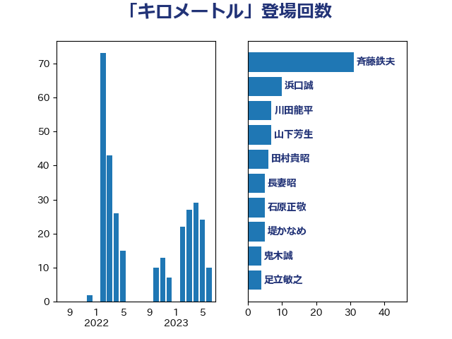

単語「キロメートル」

| 斉藤鉄夫 | 公明党 | 31 回 |
| 浜口誠 | 国民民主党 | 10 回 |
| 川田龍平 | 立憲民主党 | 7 回 |
| 山下芳生 | 日本共産党 | 7 回 |
| 田村貴昭 | 日本共産党 | 6 回 |
| 長妻昭 | 立憲民主党 | 5 回 |
| 石原正敬 | 自由民主党 | 5 回 |
| 堤かなめ | 立憲民主党 | 5 回 |
| 鬼木誠 | 立憲民主党 | 4 回 |
| 足立敏之 | 自由民主党 | 4 回 |
| 田村智子 | 日本共産党 | 3 回 |
| 日下正喜 | 公明党 | 3 回 |
| 仁比聡平 | 日本共産党 | 3 回 |
| 中野英幸 | 自由民主党 | 3 回 |
| 上田清司 | 国民民主党 | 3 回 |
| 高橋千鶴子 | 日本共産党 | 2 回 |
| 阿部弘樹 | 日本維新の会 | 2 回 |
| 長坂康正 | 自由民主党 | 2 回 |
| 長友慎治 | 国民民主党 | 2 回 |
| 緑川貴士 | 立憲民主党 | 2 回 |
| 篠原孝 | 立憲民主党 | 2 回 |
| 神津たけし | 立憲民主党 | 2 回 |
| 石井浩郎 | 自由民主党 | 2 回 |
| 牧野たかお | 自由民主党 | 2 回 |
| 永井学 | 自由民主党 | 2 回 |
| 松沢成文 | 日本維新の会 | 2 回 |
| 宮崎勝 | 公明党 | 2 回 |
| 吉田はるみ | 立憲民主党 | 2 回 |
| 中川郁子 | 自由民主党 | 2 回 |
| 高木かおり | 日本維新の会 | 1 回 |
| 鈴木敦 | 国民民主党 | 1 回 |
| 金城泰邦 | 公明党 | 1 回 |
| 里見隆治 | 公明党 | 1 回 |
| 遠藤良太 | 日本維新の会 | 1 回 |
| 辻元清美 | 立憲民主党 | 1 回 |
| 菊田真紀子 | 立憲民主党 | 1 回 |
| 美延映夫 | 日本維新の会 | 1 回 |
| 穀田恵二 | 日本共産党 | 1 回 |
| 福山哲郎 | 立憲民主党 | 1 回 |
| 石井章 | 日本維新の会 | 1 回 |
| 矢倉克夫 | 公明党 | 1 回 |
| 片山さつき | 自由民主党 | 1 回 |
| 浜田靖一 | 自由民主党 | 1 回 |
| 浜地雅一 | 公明党 | 1 回 |
| 榛葉賀津也 | 国民民主党 | 1 回 |
| 柴田巧 | 日本維新の会 | 1 回 |
| 末次精一 | 立憲民主党 | 1 回 |
| 末松義規 | 立憲民主党 | 1 回 |
| 平林晃 | 公明党 | 1 回 |
| 川崎ひでと | 自由民主党 | 1 回 |
| 岸田文雄 | 自由民主党 | 1 回 |
| 岩本剛人 | 自由民主党 | 1 回 |
| 山田勝彦 | 立憲民主党 | 1 回 |
| 山崎誠 | 立憲民主党 | 1 回 |
| 大口善徳 | 公明党 | 1 回 |
| 嘉田由紀子 | 無所属 | 1 回 |
| 和田有一朗 | 日本維新の会 | 1 回 |
| 吉良よし子 | 日本共産党 | 1 回 |
| 伊藤達也 | 自由民主党 | 1 回 |
| 伊波洋一 | 無所属 | 1 回 |
| 中川康洋 | 公明党 | 1 回 |
| 中島克仁 | 立憲民主党 | 1 回 |
| 三浦信祐 | 公明党 | 1 回 |